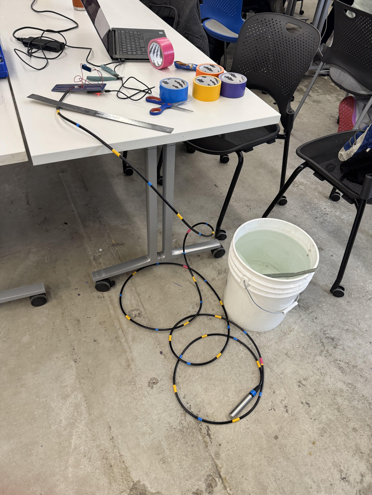

Week 8 Team Updates
Housing
Plan to use solvent cement as sealant after speaking with Andy Whitman. Planning on creating a detailed CAD representation of the sensor including electronic components
Sensing
After learning that we only needed to mix the phosphate solution once, we discussed different methods of mixing we could test in future weeks. One such method is adding all 12 drops of the reagent to the bottom of the test tube first before adding the water. Another such method we discussed is alternating between adding reagents and water in the hopes that the solution will mix with itself with each addition. We are hoping to test this process with nitrate as well. We also attempted to collect more nitrate test data with a wider range of concentrations. We plan to repeat the test from week 5 using just conditions #3 and #4 and classify the colors using the camera. We calculated the amount of KNO3 pellets we would need to obtain the desired nitrate concentrations. However, we ran into some issues with the scale not being precise enough to measure the masses of pellets we would need. To try to get around this issue, we added enough pellets to reach a mass of one gram. We then counted the number of pellets we needed to determine the number of grams per pellet.
Salinity
Attached our steel screw electrodes to the voltage divider circuit and found a larger bucket of water to test the sensor. Tested how resistance measurement and standard deviation vary with distance between electrodes, found minimal variations between 2cm and 6cm with the least variation occurring at 4cm. Plan to carry out further tests with the dielectrode system.
Communications
Display on the receiver is now working on displays a message containing information about received packets. Working on saving data to an SD card and reading sensor data.
Depth Sensing
This week we adjusted the sensor slightly and resoldered all the points to ensure nothing was touching.
I then wanted to record more points to find a more stable relationship between the readins and depth.
To do this, we went back to thet tank. This time we were more prepared and made markings on the cable to record
depth and measure readings at those specific depths. We then recorded the values, graphed them and got some interesting
results. The readings were not consistent. The problem is also that salinity is required to measure pressure.
